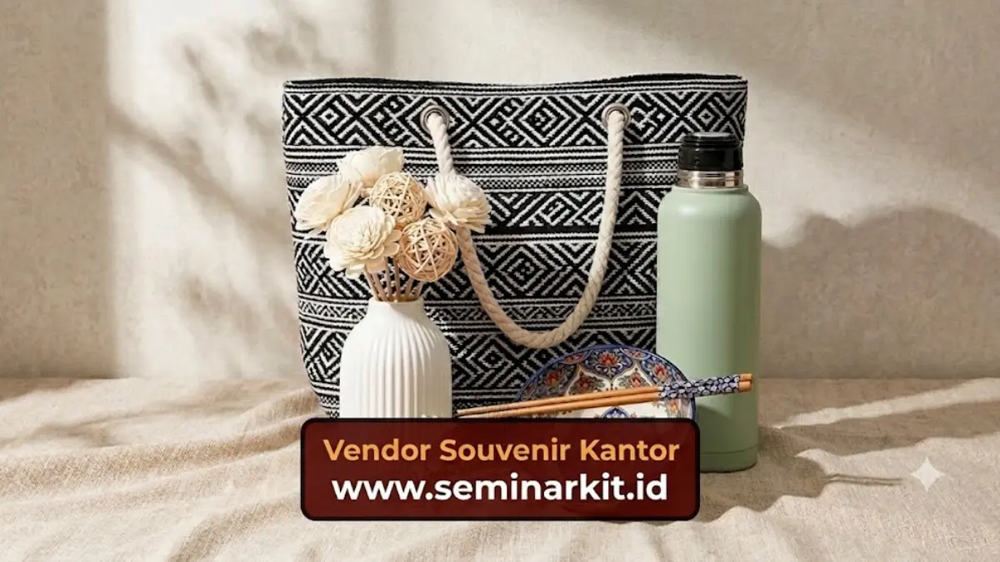

Manfaat souvenir kantor bagi branding perusahaan meliputi peningkatan pengenalan merek, penguatan citra profesional, serta terjalinnya hubungan bisnis yang lebih erat dengan klien dan karyawan.
- Souvenir kantor memperkuat pengenalan merek secara pasif dan berkelanjutan.
- Barang berkualitas mencerminkan citra profesional perusahaan di mata penerima.
- Souvenir yang relevan dapat meningkatkan loyalitas klien maupun karyawan.
- Manfaat branding lebih optimal jika souvenir digunakan berulang oleh penerima.
Apa Manfaat Utama Souvenir Kantor bagi Perusahaan?
Manfaat utama souvenir kantor bagi perusahaan adalah memperkuat pengenalan merek melalui barang fisik yang digunakan penerima secara berulang dalam kehidupan sehari-hari.
Berbeda dengan media promosi digital yang mudah terlupakan, souvenir fisik seperti alat tulis atau tumbler cenderung tetap berada di sekitar penerima dalam jangka waktu lebih lama.
Hal ini menciptakan efek pengingat merek yang konsisten tanpa perlu upaya promosi tambahan secara terus-menerus.
Selain manfaat branding, souvenir kantor juga berfungsi sebagai bentuk apresiasi nyata kepada klien maupun karyawan, yang secara umum dapat meningkatkan kesan positif terhadap perusahaan pemberi souvenir tersebut.
Bagaimana Souvenir Kantor Memengaruhi Citra dan Branding Perusahaan?
Souvenir kantor memengaruhi citra dan branding perusahaan melalui kualitas barang, konsistensi desain logo, serta relevansi barang tersebut terhadap kebutuhan penerima.
Souvenir dengan kualitas bahan yang baik dan desain logo yang rapi cenderung mencerminkan citra perusahaan yang profesional dan memperhatikan detail.
Sebaliknya, souvenir dengan kualitas rendah dapat memberikan kesan kurang serius, meskipun tujuan awalnya adalah membangun hubungan baik dengan penerima.
Konsistensi penggunaan warna, logo, dan gaya desain pada setiap souvenir yang diberikan juga membantu memperkuat identitas visual perusahaan secara keseluruhan di berbagai kesempatan.

Apakah Souvenir Kantor Efektif Membangun Loyalitas Klien dan Karyawan?
Souvenir kantor secara umum dapat mendukung loyalitas klien dan karyawan apabila diberikan secara tepat waktu, relevan dengan kebutuhan penerima, dan disertai dengan pendekatan hubungan bisnis yang baik secara keseluruhan.
Pemberian souvenir bukan satu-satunya faktor pembentuk loyalitas, namun dapat menjadi pelengkap yang memperkuat hubungan bisnis yang sudah terjalin.
Klien yang merasa dihargai melalui pemberian souvenir yang relevan cenderung memiliki kesan positif terhadap perusahaan, meskipun keputusan bisnis tetap dipengaruhi banyak faktor lain seperti kualitas layanan dan produk.
Bagi karyawan internal, souvenir kantor yang diberikan pada momen tertentu, seperti ulang tahun perusahaan atau pencapaian target, dapat meningkatkan rasa dihargai dan mempererat kebersamaan tim secara umum.
Bagaimana Mengukur Efektivitas Souvenir Kantor sebagai Media Branding?
Efektivitas souvenir kantor sebagai media branding dapat diamati melalui tingkat penggunaan barang oleh penerima serta respons atau umpan balik yang diterima perusahaan setelah pemberian souvenir tersebut.
Perusahaan dapat memperhatikan apakah penerima benar-benar menggunakan souvenir yang diberikan dalam aktivitas sehari-hari, karena barang yang jarang digunakan cenderung kurang optimal dalam menciptakan efek branding berkelanjutan.
Umpan balik langsung dari klien atau karyawan juga dapat menjadi indikator sederhana mengenai relevansi dan kualitas souvenir yang telah diberikan.
Souvenir kantor memberikan manfaat nyata bagi branding perusahaan apabila dipilih dengan mempertimbangkan kualitas, relevansi, dan konsistensi desain secara menyeluruh.
Untuk memahami jenis dan cara memilih souvenir yang tepat, simak kembali pembahasan mengenai jenis-jenis souvenir kantor yang populer dan cara memilih souvenir kantor sesuai budget.

Banner promosi: klik gambar untuk langsung terhubung ke WhatsApp tim sales.